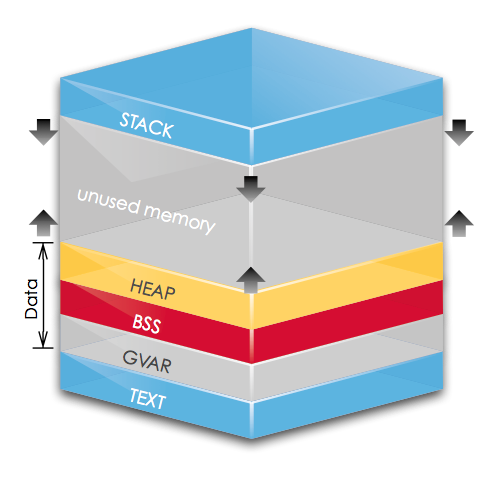

进程地址空间
进程虚拟内存的划分
现代操作系统对每个进程都分配了完整的虚拟内存地址空间。进程会把整个地址空间分成多个区间来使用。 程序员最为熟悉的两个区间莫过于堆和栈。然而还有其他的内存区间来存储代码、静态、全局变量等等。
下图表示进程对虚拟内存的划分：

虚拟内存技术使得每个进程都可以独占整个内存空间，地址从零开始，直到内存上限。每个进程都将这部分空间（从低地址到高地址）分为六个部分：
- TEXT段：整个程序的代码，以及所有的常量；这部分内存是是固定大小的，只读的
- DATA段，又称GVAR：初始化为非零值的全局变量
- BSS段：初始化为0或未初始化的全局变量和静态变量
- HEAP（堆空间）：动态内存区域，使用malloc或new申请的内存
- 未使用的内存
- STACK（栈空间）：局部变量、参数、返回值都存在这里，函数调用开始会参数入栈、局部变量入栈；调用结束依次出栈
其中堆空间和栈空间的大小是可变的，堆空间从下往上生长，栈空间从上往下生长。
由于常量存储在TEXT段中，所有对常量的赋值都将产生segment fault异常。
可以认为BSS段中的所有字节都是0。因为未初始化的全局变量、静态变量都在BSS段中， 所以它们都会被初始化为0，同时类的成员变量也会被初始化为0，但编译器不保证局部变量的初始化。
上面说栈（STACK）是从上到下（高地址到低地址）分配的，而且我们知道， 函数的局部变量的空间是在进入函数体后才分配的，在栈空间里。
声明：到这里上面的内容都来自这里1因为本科没有学习汇编和编译原理之类知识，所以从引文一中转了自己喜欢的部分。
函数调用的细节
编译器在编译的过程中，遇到函数调用时，会加入几条汇编指令。这些汇编指令的作用是：
- 分配一段栈空间，用于存放被调函数的参数和局部变量。
- call被用函数。 3, 当被调函数返回时释放掉这段分配栈空间。
以上具体内容你可以找一篇c的汇编代码，看看栈底寄存器ebp和栈顶寄存器esp相关指令。T_T
至于分配栈空间和释放栈空间是由被调函数还是调用函数处理，取决于函数名修饰约定2。